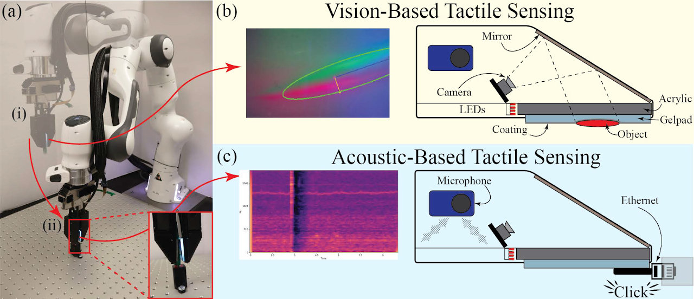

Publications
Full list on Google Scholar · ORCID
Journal Articles



✋VibTac: A High-Resolution, High-Bandwidth Tactile Sensing Finger for Multimodal Perception in Robotic Manipulation
IEEE Transactions on Haptics, vol. 18, pp. 507–518, 2025
🥈 ASME MRC 2nd Prize